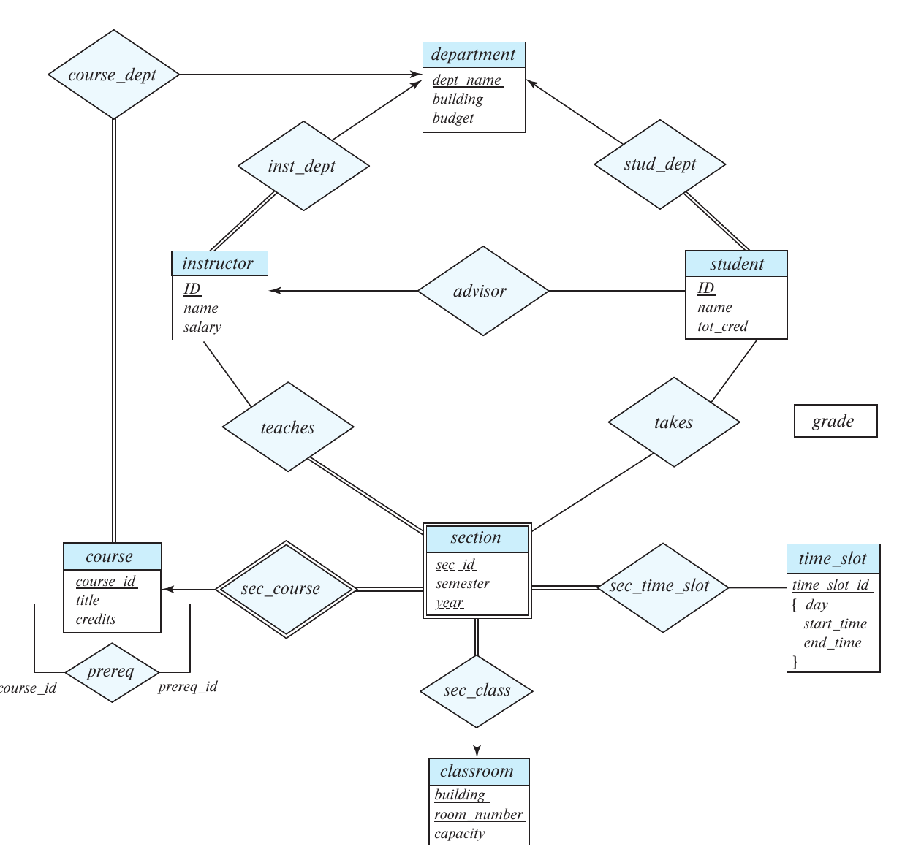

Chapter 6: Database Design Using the E-R Model
6.6 Removing Redundant Attributes
When designing an E-R model, we first identify entity sets and their attributes to capture required values. However, introducing relationship sets can make certain attributes redundant.
- The Core Principle: A good entity-relationship design does not contain redundant attributes.
- If a relationship naturally connects two entity sets, we do not need to explicitly store the primary key of one entity inside the other entity as an attribute.
Example 1: instructor and department
Consider the entity sets instructor and department:
instructor has attributes ID, name, dept_name, and salary.department has attributes dept_name (primary key), building, and budget.
We model the association using a relationship set inst_dept relating instructor and department. Because dept_name is the primary key for department, keeping it as an attribute inside instructor is redundant and it must be removed.
Why Remove Redundant Attributes?
Removing dept_name from the instructor entity set may seem unintuitive since our earlier relational tables included it. However:
- Explicit Logic: Treating the connection uniformly as a relationship (rather than an attribute) makes the logical relationship explicit.
- Avoiding Premature Assumptions: It helps avoid assuming an instructor is associated with only one department. If an instructor has multiple departments, this is handled easily by a separate relation without changing the
instructor entity.
- Note: When we convert the E-R diagram back to a relational schema later, the attribute will reappear in the
instructor table if the mapping is many-to-one.
Quick Review: Checkpoint 1
Test your understanding of redundant attributes:
- Why is it preferable to use the
inst_dept relationship rather than simply giving the instructor entity a dept_name attribute?
- True or False: If an attribute is removed from an entity set during the E-R modeling phase to reduce redundancy, it will permanently stay out of the final relational table design.
Example 2: section and time_slot
Consider course offerings (section) and their time slots (time_slot):
section has attributes course_id, sec_id, semester, year, building, room_number, and time_slot_id.time_slot has attribute time_slot_id (primary key).
These entities are related through the relationship set sec_time_slot. The attribute time_slot_id is redundant in the section entity set and needs to be removed.
Example 3: section and classroom
Consider entity sets section and classroom:
classroom has attributes building and room_number forming the primary key.- We have a relationship set
sec_class that relates section to classroom.
The attributes building and room_number are redundant in the entity set section and should be removed.
The Cleaned E-R Diagram

Notice in the diagram that none of the entity sets have an attribute that is made redundant by one of the relationship sets.
Summary of 6.6
- Identify Redundancy: When a relationship set links two entities, the primary key of one entity shouldn't be hardcoded as an attribute in the other.
- Maintain Flexibility: Removing redundant attributes prevents premature assumptions about cardinality (e.g., assuming an instructor only has one department).
- Clean E-R Models: The final E-R diagram relies purely on relationship lines (like
inst_dept or sec_class) to represent associations, keeping entity attribute boxes lean and focused.
Subchapter 6.7: Reducing E-R Diagrams to Relational Schemas
From E-R to Relational Schemas
Because both E-R models and relational models rely on similar design principles, we can convert an E-R diagram directly into a set of tables.
- For each entity set and relationship set, there is a unique relation schema.
- Constraints in the E-R diagram (like primary keys and mapping cardinalities) map directly to constraints on the relational tables (like primary keys and foreign keys).
6.7.1 Strong Entity Sets
A strong entity set with simple descriptive attributes maps directly to a table.
- Create a table with the same name as the entity set.
- Create a column for each simple attribute.
- The primary key of the entity set becomes the primary key of the table.
-- Example: The student entity set
CREATE TABLE student (
ID VARCHAR(5),
name VARCHAR(20),
tot_cred NUMERIC(3,0),
PRIMARY KEY (ID)
);
6.7.2 Composite & Derived Attributes
Not all attributes are simple. We must handle complex structures carefully:
- Composite Attributes: Flatten them. Do not create a column for the composite attribute itself; instead, create separate columns for each of its component attributes.
Example: name becomes first_name, middle_initial, last_name.
- Derived Attributes: Ignore them. They are not explicitly stored in the relational database model since their values are computed on the fly.
6.7.2 Multivalued Attributes
Relational tables require atomic values, so we cannot store a list of values in one column.
- Create a entirely new relation schema for the multivalued attribute.
- The new table includes the multivalued attribute itself AND the primary key of the parent entity set.
- The primary key of the new table is the combination of all its attributes.
-- Example: An instructor with multiple phone numbers
CREATE TABLE instructor_phone (
ID VARCHAR(5),
phone_number VARCHAR(15),
PRIMARY KEY (ID, phone_number),
FOREIGN KEY (ID) REFERENCES instructor(ID)
);
Quick Review: Checkpoint 1
Test your understanding of entity reduction:
- If an entity set
employee has a composite attribute address, what columns will exist in the final employee table?
- Why must a multivalued attribute like
email_addresses be split into a separate table instead of being kept inside the main entity table?
- What forms the primary key of the new table created for a multivalued attribute?
6.7.3 Weak Entity Sets
A weak entity set lacks a complete primary key of its own and depends on a strong entity set.
- The table includes all attributes of the weak entity set.
- Plus: It must include the primary key attributes of the identifying strong entity set.
- Primary Key: The combination of the strong entity's primary key and the weak entity's discriminator.
-- Example: section depends on course
CREATE TABLE section (
course_id VARCHAR(8), -- From strong entity 'course'
sec_id VARCHAR(8), -- Discriminator
semester VARCHAR(6), -- Discriminator
year NUMERIC(4,0), -- Discriminator
PRIMARY KEY (course_id, sec_id, semester, year),
FOREIGN KEY (course_id) REFERENCES course(course_id)
);
6.7.4 Relationship Sets
Relationships between entities are translated into their own linking tables.
- The table includes the primary keys of all participating entity sets, plus any descriptive attributes of the relationship itself.
- Foreign keys are created referencing the participating entity tables.
- Primary Key Selection:
- Many-to-Many: The union of all participating primary keys.
- Many-to-One: The primary key of the "many" side entity.
- One-to-One: The primary key of either entity.
6.7.5 Redundancy of Schemas
When reducing diagrams, some relationship schemas end up being completely redundant.
- Consider the identifying relationship set (e.g.,
sec_course) that links a weak entity (section) to a strong entity (course).
- The
sec_course table would contain course_id (from course) and course_id, sec_id, semester, year (from section).
- Because the
section table already contains all of these exact columns to form its own primary key, the sec_course relationship table is redundant and should be discarded!
6.7.6 Combination of Schemas
To optimize the database, we can often merge tables together, avoiding unnecessary joins.
- If a relationship is Many-to-One AND the participation of the "many" side is total, we can combine the relationship schema into the "many" side's entity schema.
- Example: The
inst_dept relationship relates many instructors to one department. Every instructor must have a department (total participation).
- Instead of creating an
inst_dept table, we simply add dept_name as a foreign key column directly inside the instructor table.
Quick Review: Checkpoint 2
Test your understanding of schema optimization:
- When converting a weak entity set into a table, why must we include the primary key of its identifying strong entity?
- Why do we completely discard the table generated for an identifying relationship (like the relationship between a building and its rooms)?
- If employees can optionally belong to a department (partial participation), can we still merge the department relationship into the employee table? What consequence does this have?
Summary of 6.7
- Entity Mapping: Strong entities become standard tables. Weak entities pull in the primary key of their parent to survive.
- Attribute Mapping: Flatten composite attributes. Move multivalued attributes into their own dedicated bridging tables. Drop derived attributes.
- Relationship Mapping: Relationships become bridging tables built from the primary keys of the entities they connect.
- Optimization: Drop redundant identifying relationships. Merge many-to-one relationships into the "many" side table to minimize the total number of tables.
Subchapter 6.9: Entity-Relationship Design Issues
6.9.1 Common Mistakes in E-R Diagrams
Avoid these structural errors when designing entity and relationship sets:
- Primary Keys as Attributes: Do not use the primary key of one entity set as an attribute of another entity set. Use a relationship set instead (e.g., use a
stud_dept relationship rather than putting dept_name inside student).
- Redundant Relationship Attributes: Do not designate the primary-key attributes of the related entity sets as attributes of the relationship set itself. The primary keys are already implicit in the relationship.
6.9.1 Common Mistakes (Continued)
- Single-Valued vs. Multivalued: Do not use a relationship with a single-valued attribute for a situation that requires multiple values.
- Example: Adding
assignment and marks to the takes relationship restricts the student to a single assignment per course section.
- Solution: Model
assignment as a weak entity identified by section, or use a multivalued composite attribute.
- Repeating Attributes: When splitting a large E-R diagram across multiple pages, show the attributes of an entity set only on its first occurrence to prevent inconsistencies.
Quick Review: Checkpoint 1
Test your understanding of E-R diagram mistakes:
- Why is it incorrect to include the
instructor_ID as an attribute inside the advisor relationship diamond?
- If a student has multiple assignments in a section, why does adding a simple
marks attribute to the takes relationship fail to model this correctly?
6.9.2 Entity Sets vs. Attributes
Deciding whether an object is an attribute or its own entity depends on the enterprise's structure.
- Attribute Example: A simple
phone_number string implies the instructor just has phone numbers.
- Entity Example: Creating a
phone entity allows you to store additional metadata, such as location (office/home) or type (mobile/IP), and allows multiple people to share the exact same phone entity.
- Guideline: Treat an object as an entity if you need to keep extra information about it or track relationships to it. (e.g., a person's
name should be an attribute, not an entity).
6.9.3 Entity Sets vs. Relationship Sets
Sometimes an action can be modeled as either an entity or a relationship.
- Relationship Approach: A student
takes a section. This is compact and directly describes an action between entities.
- Entity Approach: Creating a
registration entity set, connected via relationships to student and section.
- Guideline: Designate a relationship set to describe an action between entities. However, if the system (like a registrar's office) needs to associate significant independent information with the record itself, an entity set may be preferable.
6.9.4 Binary vs. n-ary Relationship Sets
Most relationships are binary, but ternary (3-way) or n-ary relationships exist.
- It is always conceptually possible to replace a nonbinary relationship with a set of binary relationships by creating an intermediate entity set $E$.
- Drawbacks of converting to binary:
- Requires an artificial identifying attribute for the new entity $E$.
- Increases design complexity and storage requirements.
- May make it impossible to express certain constraints (e.g., a constraint that the original relationship is many-to-one from A and B to C).
Quick Review: Checkpoint 2
Test your understanding of design choices:
- Under what condition is it better to model a "phone" as an entity set rather than just a multivalued attribute of an instructor?
- While it is possible to convert any ternary relationship into multiple binary relationships, name one reason why doing so might be undesirable.
Summary of 6.9
- Avoid Redundancy: Never duplicate primary keys as attributes across entities or relationships when a relationship link already exists.
- Design Granularity: Elevate attributes to entities only when they carry metadata (like a phone's location). Elevate relationships to entities only when the relationship record itself has an independent lifecycle.
- Relationship Degrees: Use n-ary relationships when multiple entities participate in a single, unified association that cannot be accurately constrained by a web of binary links.